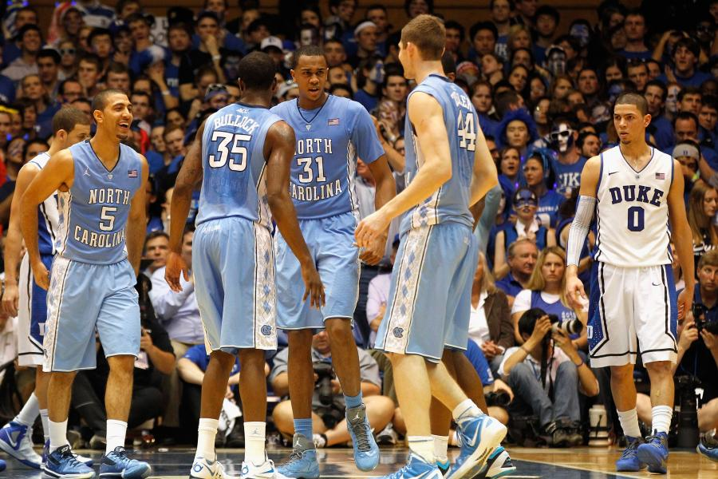
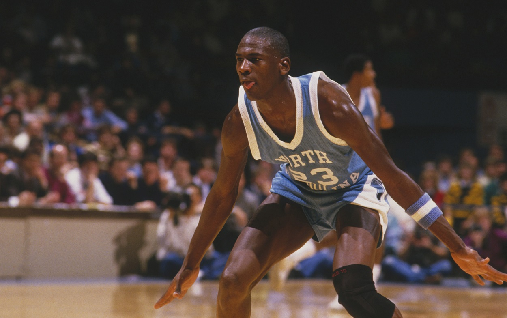

The University of North Carolina at Chapel Hill has one of the most renowned programs for mens basketball. With hall of fame coaches, NCAA championships, a robust network of NBA players, the success of the program is undeniable. The purpose of this webpage is to introduce the viewer to what Carolina Basketball is all about. This page provides statsicitcs of UNC Basketball for each season, a documentary about the early days of the program, as well as information regarding one of the greatest rivalries in all of sports: Carolina vs Duke.
Statistics Per Season Documentary Carolina vs. Duke: Greatest Rivalry in Sports

